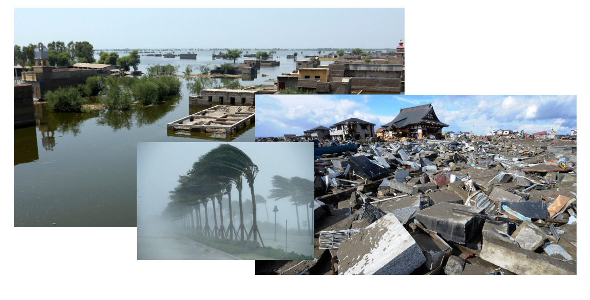
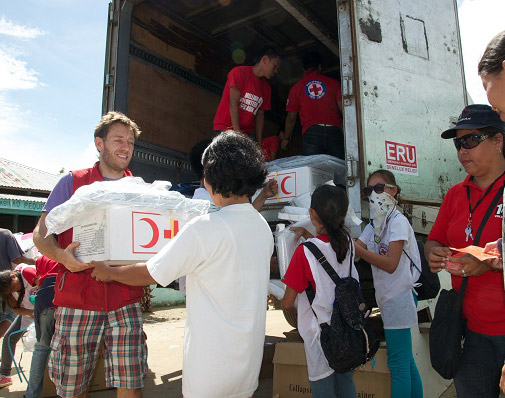

ISP Business Plan
SHELTERSAFE
Onik Hoque and Pranav Krishnan
Identity/Who We Are
ShelterSafe is an app that aims to unite the efforts of governments and humanitarian organizations into a single hub, built to combine multiple factors such as food availability, shelter capacity, distance, and more to guide users to the ideal shelter.
The Problem
Natural disasters leave permanent scars wherever they occur. Preventable deaths occur with frightening regularity, and shelters are often not taken advantage of to their full potential. The issue, more often than not, is a lack of awareness regarding shelters and which shelters to go to in case of an emergency. It is much too common an occurence that people will seek refuge in a shelter that has already reached maximum capacity or has ran out of provisions.


ShelterSafe: An Effective Solution
ShelterSafe creates a hub of information regarding nearvy shelters, statistics at each shelter, disaster updates, and more. Two versions of the app will exist: one with administrative functions, which can be used by the Red Cross, UNICEF, and governments to update statistics regarding their shelters, and another for general citizens, who can view the live information added by the shelters themselves. A map (sourced from OpenStreetMap) will display the users current location in relation to nearby shelters. Using information such as distance from shelter, type of disaster, exact location of disaster, food availability and shelter capacity, ShelterSafe will use an algorithm to generate the ideal shelter for one to travel to in case of an emergency. It will rely on cellular data to transmit information.
Another possible framework for ShelterSafe will ensure that it can operate no matter how badly damaged infrastructure is, but at the cost of compatibility with Apple iOS phones. This will instead rely on radio communications: relief organizations and governments will be supplied with a device outfitted with a radio transmitter and a GPS receiver. These devices will be able to take input from a human user, which will be converted to binary, which in turn will be converted to radio signal. This signal will be received by phones, converted back into understandable data, which will then be displayed to the user. Each shelter within a 50 mile radius (the limit of FM radio wave range) would have a unique channel, ensuring that each shelter can communicate data like location, available food, and capacity to citizens without the risk of channel overlap.
Target Audience
The audience of this service will be governments and humanitarian relief organization, and by proxy their audiences, the people put at risk by natural disasters. Organizations will be given access to write permissions for the database holding all the information, and citizens will be given only read permissions. Our primary goal is to appeal to governments and relief orgs, but we cannot ignore the general people as a target audience as well.

Competition
This idea is one that really hasnt been done before. Many browsers source data from all over the web in response to searches like shelters near me, but the issue is that shelters are often temporary and set up as a response to disaster. This makes our system have an advantage over basic search engines, and this ensures that no competition exists (at the moment) at our level. Should this project be well-executed, the fact that its the first will ensure that copycat projects cannot usurp the niche it takes.
Revenue
Seeing as this is a public safetly implement, it should be a non profit. Operation costs would be paid via non-profit organizations that use our service, ex. The Red Cross, UNICEF, and other humanitarian aid organizations.
Marketing
As this product is directed for administrative use by non-profit humanitarian relief organizations and governments, our aim should be to market it to them, rather than the general people thatll end up benefitting from it. Thus, the most viable form of advertisement would be to demonstrate its effectiveness through tests, and share positive results with non-profits. After successful marketing to non-profits and governments, efforts should be focused on increasing awareness throughout the general people. This can be done through more traditional forms of advertising, such as PSA style television commercials and billboards.
Expenses
After development is complete, the only expenses would be server maintainence, employment costs for both programmers and customer service, and advertisement funding. The advantage of our system is that those running the shelter update the information of the app, meaning that the amount of employees involved with the app after its completion is very few. Thus, we can use these saved costs to focus all our expenses on ensuring that the app is secure, safe, and reliable at all times.
Team Roles for Development
Ideally, each fundamental section of the app would be created by someone fully invested in it working individually, and then these parts would be improved with suggestions and input from the other members. After all this, the team would work to sew together each of these sections into a finished product. Roles that come to mind for this project is someone to work with the user interface, someone to work with serverside function, and another to work on the creation of a live updatable map.
Milestones
We have split the app up into four fundamental development stages: brainstorming/research, development of user-side function, development of admin use and backend, and debugging/testing. Knowing that we have around 28 weeks to work, we can develop an en effective workplan that takes into account the care and time each step needs. Our goal is to finish brainstorming and research by the 3 week mark. Then comes the most difficult part, creating the server and making the version of the app for general use, which we estimate to take about 12 weeks. The knowledge we gain during this period will make the development of the backend and admin version of the app faster, so it will take 11 weeks. Optimizations, troubleshooting, and testing will all occur in the final 4 weeks of the projects development cycle.
Here is a Gantt Chart that concisely displays the aforementioned information.